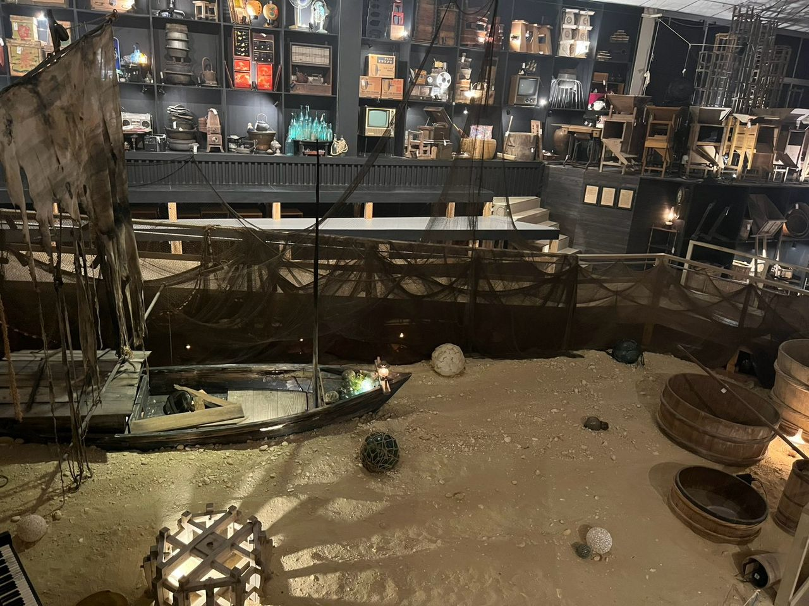
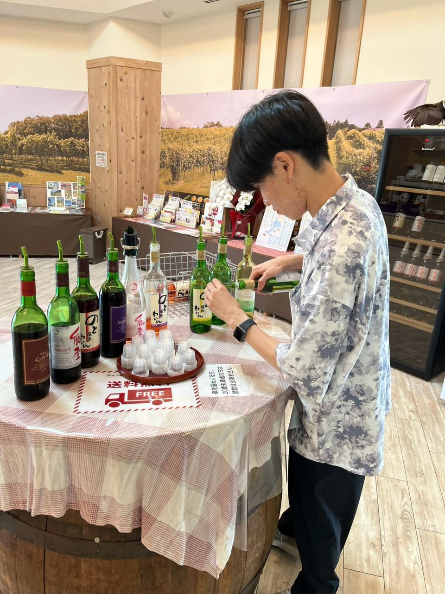
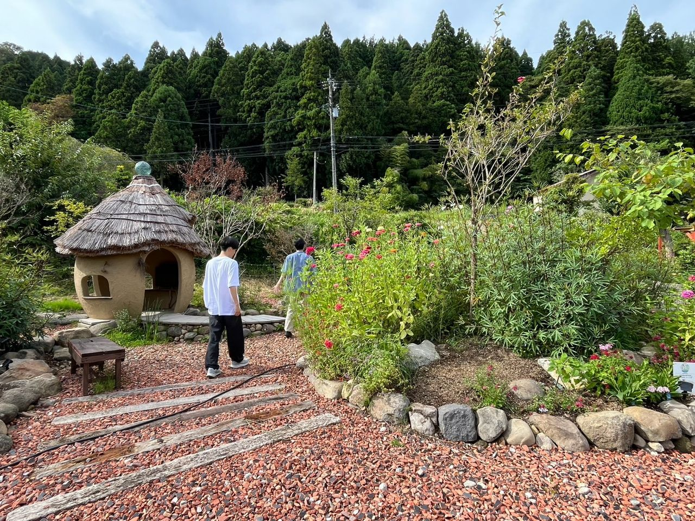
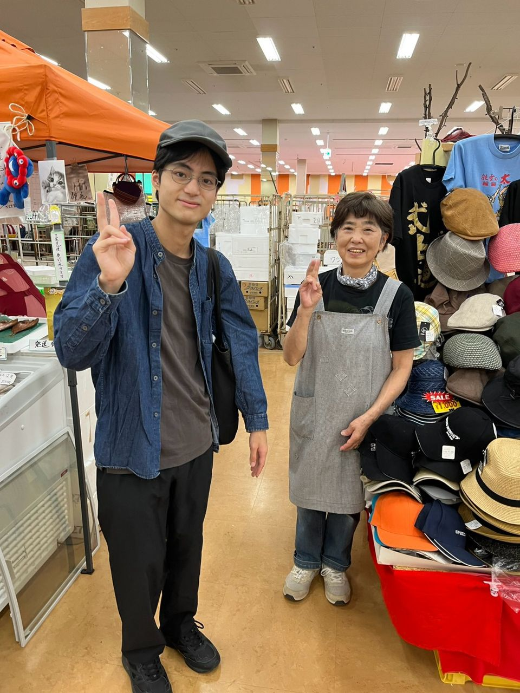
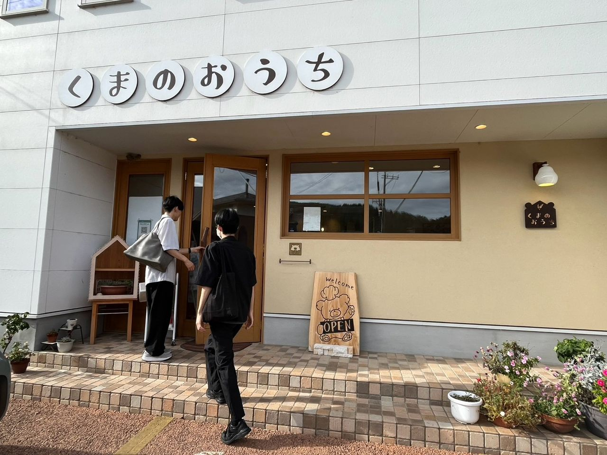
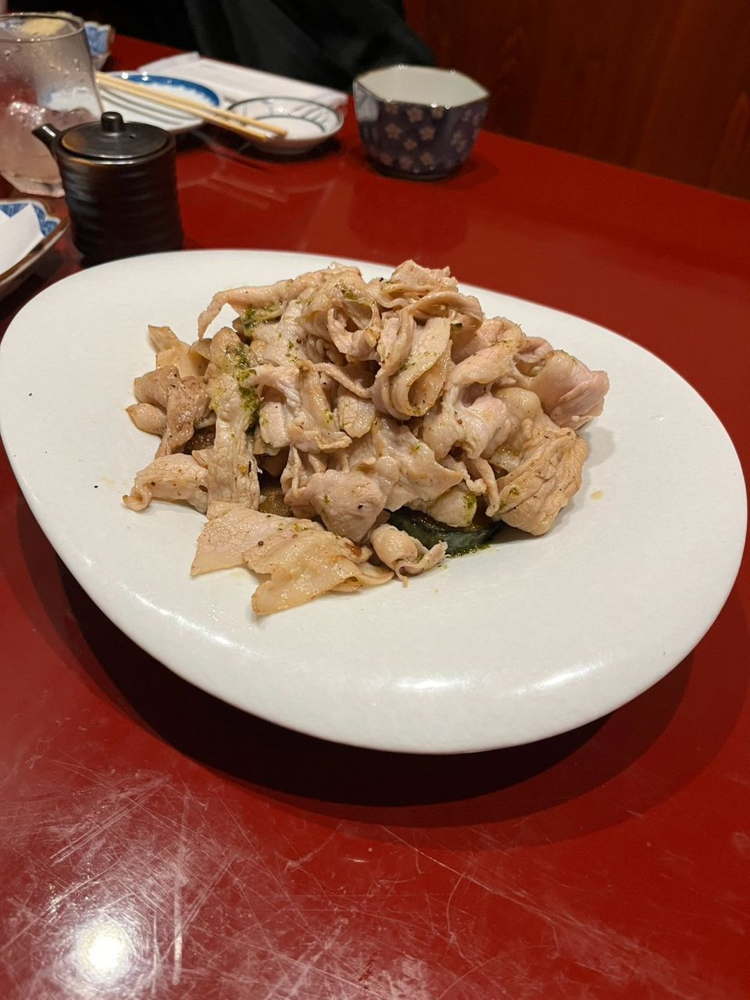
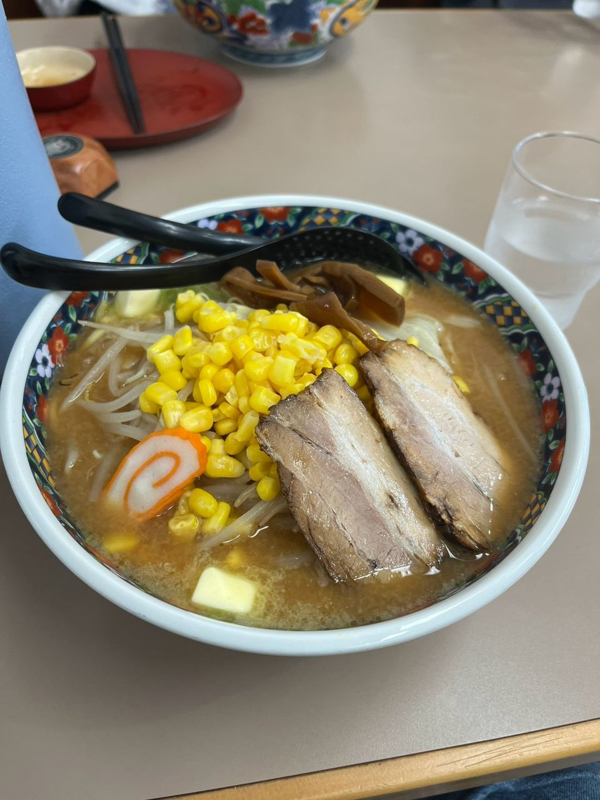
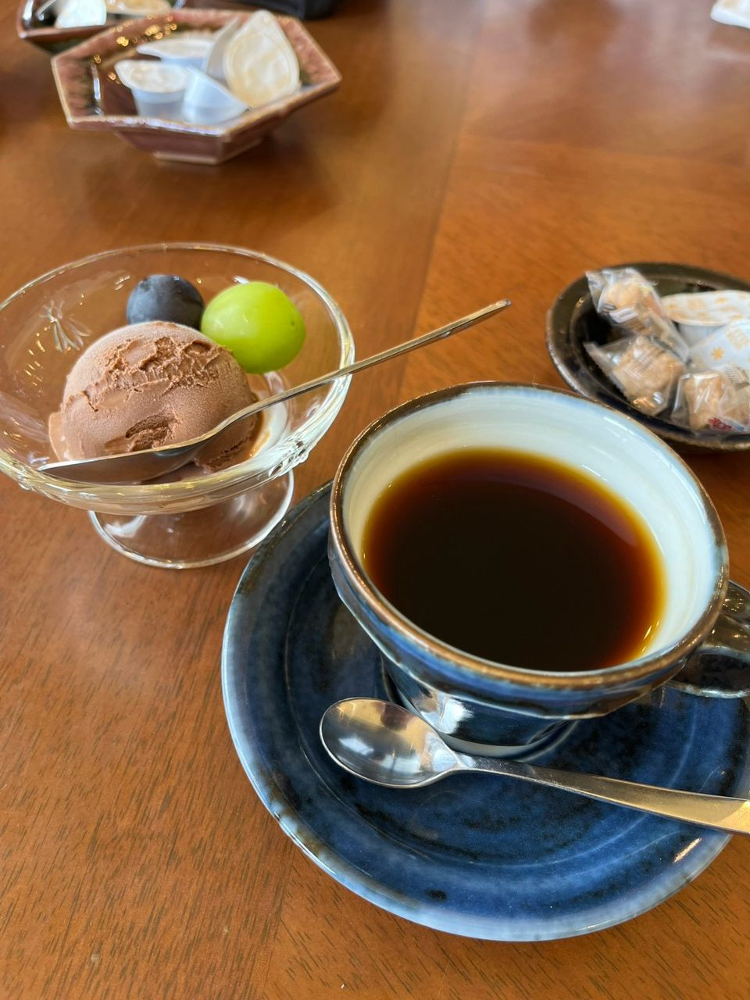

観光スポットであるスズ・シアター・ミュージアムや能登ワインを訪問しました。
加えて、白米千枚田、曽々木海岸、道の駅 すず塩田村などに再訪し、現在の様子を確認するとともに、写真や動画の追加撮影を行いました。
スズ・シアター・ミュージアムでは、実際に使われていた家具や食器などの民具が展示されています。展示物そのものだけでなく、その配置や空間全体から感じる独特の雰囲気は、現地を訪れて初めて感じられる魅力だと思いました。
2026年9月19日から9月22日にかけて、石川県の輪島市・珠洲市・穴水町を訪れ、現地調査を実施しました。
今回は初めて訪れる場所だけでなく、これまで訪れた場所を再訪し、現在の様子を改めて確認するとともに、現地への理解を深めることを重視して活動しました。
観光スポットであるスズ・シアター・ミュージアムや能登ワインを訪問しました。
加えて、白米千枚田、曽々木海岸、道の駅 すず塩田村などに再訪し、現在の様子を確認するとともに、写真や動画の追加撮影を行いました。
スズ・シアター・ミュージアムでは、実際に使われていた家具や食器などの民具が展示されています。展示物そのものだけでなく、その配置や空間全体から感じる独特の雰囲気は、現地を訪れて初めて感じられる魅力だと思いました。


「一人一花 in 能登半島」プロジェクトのガーデンや出張輪島朝市では、地域の方々と交流する機会を得ることができました。
ガーデンでは、実際に手入れをされている地域の方から、直接お話を伺うことができました。これまでプロジェクトの運営に携わる方やイベントに参加される方とお話する機会はありましたが、地域でガーデンを支えている方のお話を伺う機会は多くありませんでした。今回の交流は、現地で活動を続ける方々の思いに触れる貴重な機会となりました。


これまで能登観光アプリ「めぐり」に掲載してきた飲食店を改めて訪問し、実際にお店の方とお話する機会にも恵まれました。また、新たな飲食店にも足を運びました。
お店の魅力を改めて感じることができました。また、以前の訪問を覚えてくださっている方もおり、非常にありがたく感じました。




今回得た気づきをもとに、能登の魅力をより多くの方に伝えられるよう、アプリのアップデート開発をはじめとした活動に取り組んでいきます。